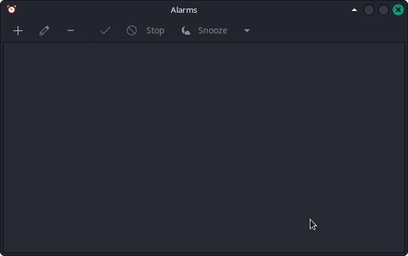
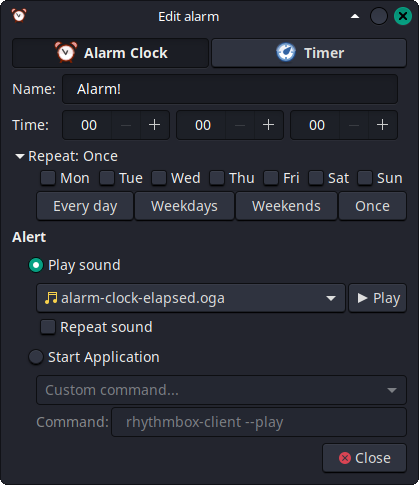

Bel Sekolah 3 Bahasa
Bismillah. Alhamdulillah berkat rahmat dan karuniaNya kami bisa membuat rangkaian aplikasi sederhana ini. Sebuah aplikasi yang kami harap dapat mempermudah lembaga pendidikan terutama lembaga pendidikan berbasis agama Islam dalam mengingatkan para pelajarnya dalam hal jam atau jadwal kegiatan. Sebuah rangkaian aplikasi yang biasa kita kenal dengan istilah Bel Otomatis.
Bel Sekolah Otomatis 3 Bahasa adalah program yang kami rangkai atau gabungan dari aplikasi alarm yang di develop oleh developer lain dengan suara bel 3 bahasa yang kami buat.
Apa Saja Fiturnya?- Suara Bel 3 Bahasa yaitu Bahasa Indonesia, Bahasa Arab dan Bahasa Inggris.
- Tersedia file efek suara tambahan.
- Sederhana dan mudah digunakan.
- Tersedia 2 tipe alarm yaitu jam dan timer.
- Terdapat pop up notifikasi.
- Mendukung banyak alarm serta alarm yang dapat diulang secara otomatis.
- Aplikasi berjalan lintas platform.
- Audio Bel 3 Bahasa : Unduh di sini (Perjanjian pengguna : CC BY-SA 4.0)
- Alarm Clock Applet : Unduh di sini atau di sini (Perjanjian pengguna : GNU GPL v2.0)
- STB Armbian tipe 1 : Lihat di sini
- STB Armbian tipe 2 : Lihat di sini
- STB Armbian tipe 3 : Lihat di sini
- Monitor Second 16inc 200 ribuan : Lihat di sini
- Monitor Second 16inc 300 ribuan : Lihat di sini
- Keyboard + Mouse wired : Lihat di sini
- Keyboard + Mouse wireless : Lihat di sini
- USB Hub type 1 : Lihat di sini
- USB Hub type 2 : Lihat di sini
- Converter HDMI to VGA tipe 1 : Lihat di sini
- Converter HDMI to VGA tipe 2 : Lihat di sini
- Kabel AUX 3.5mm : Lihat di sini
- Kabel AUX 2 in 1 Jack 3.5mm to RCA : Lihat di sini
- Sound Amplifier : Lihat di sini
- Speaker Sirine Hanaya : Lihat di sini
- Speaker TOA Narae : Lihat di sini
Pemasangan & Penggunaan
Pemasangan :
- Silahkan unduh berkas yang dibutuhkan.
- Setelah terunduh, tempatkan kedua file tersebut di tempat yang sama untuk mempermudah proses pemasangan.
- Ekstrak kedua file tersebut.
- Sampai di sini file audio sudah bisa digunakan, untuk aplikasi Alarm Clock Applet silahkan pasang dengan mengikuti langkah berikut (khusus untuk OS turunan Debian, selainnya untuk menyesuaikan) :
- Pasang semua depedensi yang dibutuhkan dengan cara membuka terminal dan gunakan perintah :
sudo apt install build-essential cmake libgconf2-dev libxml2-dev libgtk-3-dev libgstreamer1.0-dev libnotify-dev libayatana-appindicator3-dev gettext gnome-icon-theme perl gzip - Setelah semua depedensi terpasang, silahkan arahkan terminal ke tempat anda menyimpan file aplikasi Alarm Clock Applet dengan perintah :
Silahkan ganti path/to/alarm-clock dengan direktori tempat anda menyimpan berkas Alarm Clock Applet.cd path/to/alarm-clock - Setelah terminal anda berada di direktori tempat anda menyimpan berkas Alarm Clock Applet, silahkan jalankan perintah berikut untuk mulai memasang aplikasi :
mkdir build && cd build
cmake .. -DCMAKE_BUILD_TYPE=Release
make
sudo make install - Setelah proses pemasangan selesai, maka aplikasi siap digunakan dan dilanjutkan dengan langkah selanjutnya di bawah ini.
- Pasang semua depedensi yang dibutuhkan dengan cara membuka terminal dan gunakan perintah :
- Untuk menjalankan aplikasi Alarm clock applet bisa melalui menu aplikasi atau terminal dengan perintah :
alarm-clock-applet

- Fungsi masing-masing toolbar :
- Ikon "" berfungsi untuk membuat alarm baru.
- Ikon "" berfungsi untuk mengedit alarm yang dipilih.
- Ikon "" berfungsi untuk menghapus alarm yang dipilih.
- Ikon "" berfungsi untuk mengaktifkan atau menonaktifkan alarm yang dipilih.
- Ikon "" berfungsi untuk mematikan alarm yang sedang berbunyi.
- ikon "" berfungsi untuk menunda alarm yang sedang berbunyi.

- Membuat alarm / bel baru :
- Untuk membuat alarm / bel baru silahkan tekan ikon "" sehingga nanti akan muncul pop up seperti di atas.
- Silahkan pilih mode, apakah akan menggunakan mode jam atau alarm. kami lebih merekomendasikan mode jam agar mudah dalam mengaturnya.
- Isi nama alarm / bel pada kolom Nama.
- Isikan waktu alarm akan berbunyi pada kolom Time. Jika anda memilih mode alarm jam maka isi dengan waktu (pukul) alarm berbunyi dan jika anda memilih mode alarm timer maka isikan dengan durasi hitungan mundur alarm berbunyi
- Pada opsi 'Repeat', silahkan pilih :
- Every day : Setiap hari
- Weekdays : Setiap hari kerja
- Weekends : Setiap akhir pekan
- Once : Hanya sekali
- atau dengan memberi centang secara manual pada nama hari yang tersedia.
- Pada menu 'Alert', pilih 'Play Sound' dan klik pada file audio untuk memilih audio alarm. Untuk menggunakan file bel 3 bahasa, silahkan gulir sampai bawah sehingga muncul opsi 'select sound file' lalu arahkan ke tempat menyimpan file bel 3 bahasa dan pilih sesuai kebutuhan. Serta hilangkan centang pada opsi 'Repeat sound' agar suara pemberitahuan cukup di putar 1 kali saja.
- Setelah semua data terisi lalu klik 'close', maka dengan begitu 1 bel sudah selesai dibuat. Ulangi langkah ini sesuai yang dibutuhkan.
Video Bel Sekolah Otomatis 3 Bahasa
Kolom Diskusi